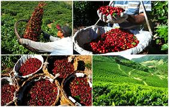
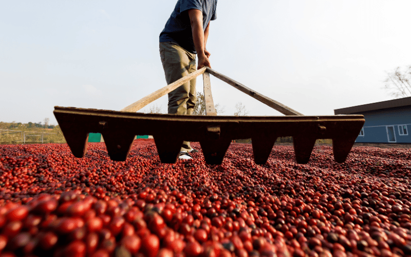
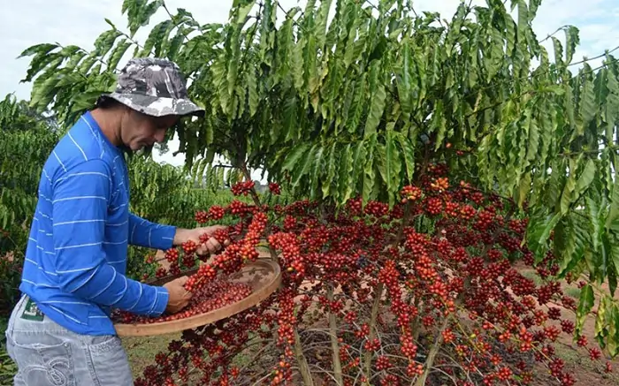
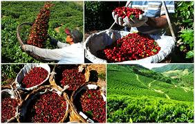
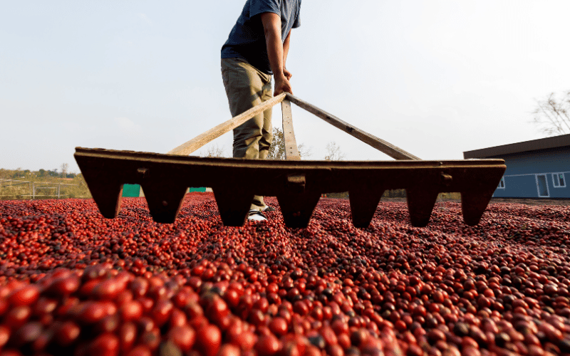
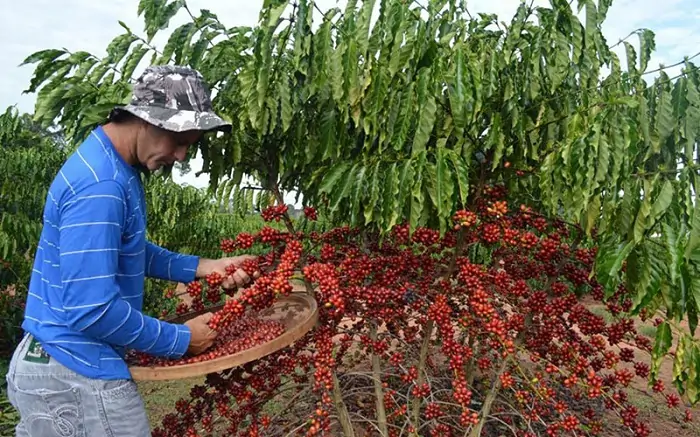

A Jornada do Café
O café nasce no campo, mas é consumido todos os dias nas cidades. Este site mostra essa conexão fundamental.
  O café nasce no campo, mas é consumido todos os dias nas cidades. Este site mostra essa conexão fundamental.
  